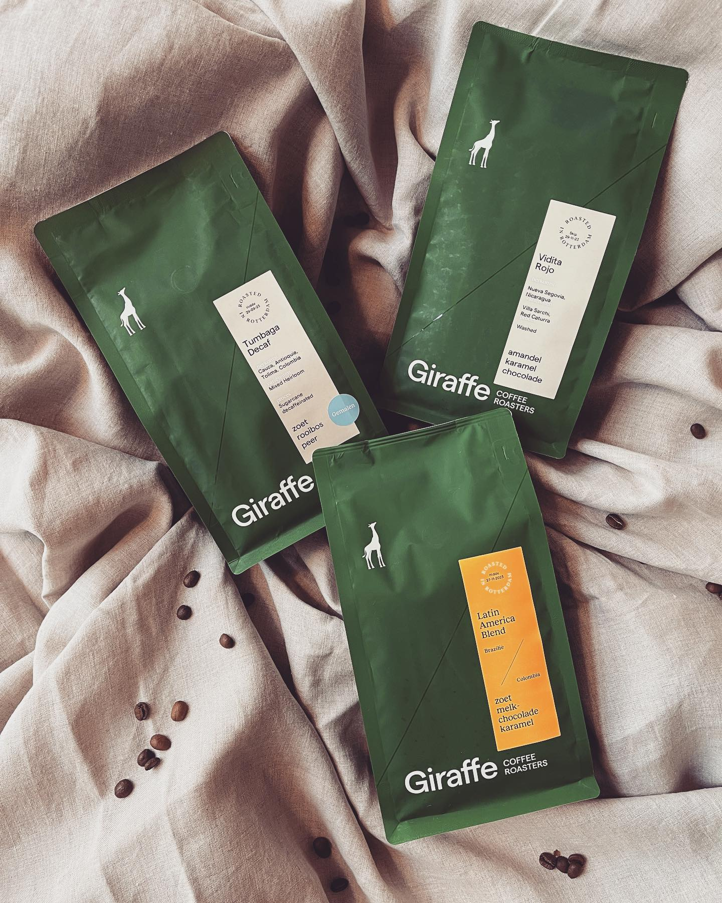

Featured — No. 01
Giraffe Coffee Roasters.
Onze koffie komt van Giraffe Coffee Roasters uit Rotterdam — een branderij met een transparante keten. We schenken hun Latin America blend op de espresso en La Aldea op de filter.
Onze partners
Wij geloven in transparantie, lokale samenwerking en eerlijke ketens. Onze koffie, thee, eieren, kaas en limonades komen van mensen die we kennen — vaak letterlijk uit de buurt.

Featured — No. 01
Onze koffie komt van Giraffe Coffee Roasters uit Rotterdam — een branderij met een transparante keten. We schenken hun Latin America blend op de espresso en La Aldea op de filter.
Specialty koffie uit Rotterdam, eerlijk en traceerbaar. Latin America blend (espresso) en La Aldea (filter).
Bezoek →Biologische thee van onze voormalige overbuurvrouw Selma. Inclusief onze eigen huisblend "June".
Buurt & bioVerse scharreleieren, wekelijks geleverd door een lokale boerderij met vrij rondscharrelende kippen.
Wekelijks versBrabantse Schone — beste Nederlandse kaas 2023. De opbrengst van deze kaas ondersteunt de lokale natuur.
Bekroond 2023Ambachtelijke limonades met een missie: biodiversiteit, minder voedselverspilling, en een kortere keten.
Missie-gedrevenBob's Classic Chai Latte — volledig biologisch, zonder toevoegingen.
100% bioSchoon water voor iedereen. Naast het water schenken we ook hun handzeep en geurstokjes — ook in onze winkel verkrijgbaar.
Schoon waterVacatures
We zijn altijd op zoek naar mensen die ons team komen versterken. Of het nu gaat om de keuken, de bar of de gastvrijheid in de zaak — stuur ons een berichtje als je denkt dat je bij ons past.
Solliciteren? Stuur een mailtje met een korte introductie en, als je het hebt, je CV.
[email protected] →Voor onze lunch-keuken zoeken we een ervaren kok die mee wil bouwen aan onze brunchkaart. Werken in een klein, hecht team van wo t/m zo.
Ondersteuning in de keuken tijdens onze drukke brunchservice. Ervaring is een pré, motivatie belangrijker.
Een onmisbare schakel in de keuken — secuur, snel en met een goed humeur.
Staat jouw droombaan er niet bij? Stuur ons toch een mail — bij June werken we graag met mensen die zelf het initiatief nemen.
Solliciteer via mail